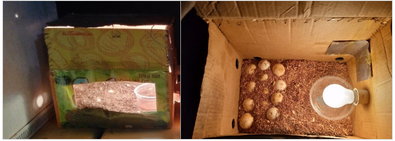
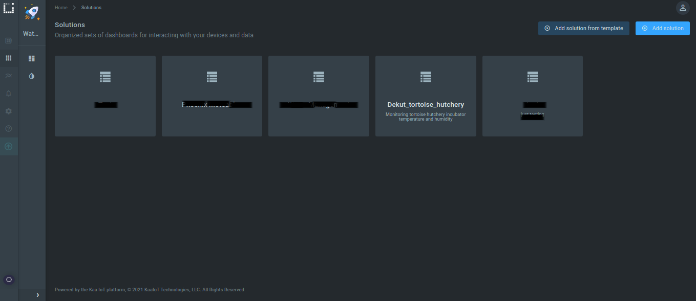

DeKUT Wildlife Conservancy is one of Kenya's Wildlife conservancies in Mount Kenya region in central Kenya. It was previously under indigenous forest cover and home to Kenyan freedom fighters. Currently, 140 acres of the forest is under Dedan Kimathi University of Technology (DeKUT) as sanctuary for ecosystems and wildlife conservation. It is a home to 9 species of grazing mammals, 2 species of primates, amphibians, many bird species and reptiles such as tortoises.
In this blog, we are going to describe a wildlife conservation Internet of Things (IoT) solution for tortoise hatchery at DeKUT wildlife conservancy. I did this work with Rashid Muchoki, a game ranger at DeKUT wildlife conservancy who among others who has been working on the project using an enclosure structure with a bulb and sliding top door. It was locally designed and assembled.
Problem
Leopard tortoise eggs take a relatively long time to hatch (11-13 weeks) and it is challenging to provide optimum hatching conditions for instance temperature and humidity. At DeKUT wildlife conservancy there are 6 adult tortoises which were introduced in 2012, two male and four female. They were brought to the conservancy from Tsavo, Mara, Amboseli and Nakuru national parks. Hitherto, their number has been constant after two attempts to hatch their eggs. After acclimating in the conservancy they lay eggs and burry them in the soil as a way of hatching them. Unfortunately the conditions are not optimum, they are being preyed on and other eggs dry and break after losing moisture. After some research done by David, Rashid and Namoni, a team the DekUT wildlife conservancy, they found out that temperature, humidity, eggs safety and nesting grounds were factors that inhibited the hatching process.

Figure 1: Locally assembled incubator with tortoise eggs
Introduction
Ecology is changing and some animal species are facing extinction. Human activities, natural phenomena and climate change are the main factors. They affect wildlife in their natural habitat, food chain and reproduction. In order to conserve them, animal species monitoring, tracking, technology aided breeding and wellness are given priority.
Wildlife supplement various economies through tourism and help balance ecology.
Tortoises are very unique animals best known for their slow pace, ability to live very long (ancient historical life) and ability to adapt and live anywhere on earth apart from antarctica. In addition, they are known for the ability to keep breath for a long while among other intriguing features. However, hatching their eggs can be challenging under normal conditions. They need a warm environment where they can breed, a condition that is very rare to find naturally.

Figure 2: A tortoise at DeKUT wildlife conservancy
Environmental sensor development and Kaa IoT Platform
The existing design lacked condition monitoring and control features to maintain optimum temperature and humidity in the casing (incubator). The two parameters should be maintained at certain ranges throughout. Temperature for instance determines their gender where low temperature produces males while higher temperatures females. Further, low temperatures can lengthen the period. Therefore, approximate hatching temperature is between 26°C to 32°C.
Tortoise eggs can be soft or hard shelled but most of them are hard shelled hence humidity required by each species may vary. It is hard for one to tell the level of humidity without the use of tools such as hygrometers or calibrated sensors. It should be maintained within the range of 40%-70%. Low humidity causes pitting and collapsing of the eggs while high humidity enhances bacterial growth. We designed and developed a temperature and humidity monitoring sensor node based on ARM STM32 F446re nucleo board and Kaa IoT platform.
Figure 3: Initial incubator with eggs buried under sawdust without a temperature and humidity sensor
Resources
- ARM STM32 F446re nucleo board.
- AAM2302B (DHT22) single bus digital temperature and humidity sensor module.
- ESP8266 Wi-Fi microchip.
- Jumpers.
- P56 Casing adaptor box.
- Arduino Desktop IDE.
- Kaa IoT platform free demo account.
- Micro USB cable.
- PC.
- 5v USB power adaptor.
Prototyping
Hardware Assembling
A Wi-Fi microchip is connected to a nucleo board as described in Figure 3. HDT22 sensor is also connected on 3.3V (red) pin, GND (black) and D7 (data). All these modules are connected using female-female jumpers to the board. The circuit is housed in the P56 adaptor box. A 5V power adapter is connected on Vin and GND of the nucleo board to power the sensor node during deployment in the conservancy office.
Figure 4: Connection of Wi-Fi microchip to nucleo board (source dsa 2017)
Kaa IoT Platform Setup and Configuration
To monitor the incubator hatching conditions remotely and make decision, we connected the device to Kaa IoT platform wirelessly with a free demo account. They allow connection of up to 5 devices among other features offered on a free tier. We get endpoint token and application version from the platform which is included in the program for data communication between the platform and the sensor node. The incubator structure was located in an office with Wi-Fi connectivity hence easy to connect the sensor node to Kaa IoT platform using the internet. All we needed was the Wi-Fi SSID and password.
For more reference check out Kaa IoT documentation on how to configure the sensor node on the platform

Figure 5: Kaa IoT platform configuration and device registration
Flashing program on the endpoint
On the Arduino desktop IDE, relevant libraries and packages were installed. The credentials (endpoint token and application version) obtained from the Kaa IoT platform were set in the sketch including office Wi-Fi SSID and password. A sketch on this repository was flashed on the nucleo board using a micro USB cable. It is based on the Kaa IoT documentation.
Figure 6: Flashing temperature and humidity monitoring program to the sensor node
Deployment
The sensor node was deployed in the incubator by mounting it on the inner wall. However, a few changes were made on the incubator structure to achieve required conditions. A 40 Watt bulb was connected in the incubator to control temperature. Also slightly wet sawdust, a small water trough with water and sponge were added to enhance humidity production. In addition, 28 tortoise eggs which were buried in the sawdust were put on a tray and placed on a raised platform in the incubator. Aeration was adjusted by creating ventilation on the incubator walls and sliding door. This was achieved by relying on sensor measurements on the Kaa IoT dashboard as datum until a stable temperature of approximately 28°C and 75% humidity was achieved. Device drew power from a power extension nearby and the final set up is as in Figure 7.
Figure 7: Sensor deployed in the incubator
Results
On the Kaa IoT dashboard, we customised and set various widgets to visualize temperature and humidity parameters in real time. The device sends data at an interval of 1 minute. The location of the sensor and alarms were set using various colors; yellow, green and red and a set of threshold values to trigger email alerts. 2 out of 3 hatchlings survived while one died inside the egg.
Figure 8: Hatched tortoise from the incubator
A dashboard visualizing the data both on pc and mobile phone was successfully set and was given to game rangers for use in monitoring of the incubator. The dashboard was shared to the rangers by creating a user with read rights on the dashboard as shown in Figure 9. The sensor node has been operational since November 2020 until now to help hatch more tortoises. We have also generated a dataset in the process which can be used in developing applications around tortoise conservation.
Figure 9: Game ranger Rashid responding to temperature and humidity alarm (left) and interacting with the dashboard on mobile phone
Figure 10: Tortoise monitoring dashboard on pc
Figure 11: Tortoise monitoring dashboard on mobile phone
Conclusion and future work
Using IoT environmental sensors can enhance optimum hatching conditions through monitoring of temperature and humidity in the incubator. Temperature, humidity, egg conditions and nesting grounds affect the hatching process. The developed incubator protects the eggs from predators and harsh environmental conditions. Water and bulb in the incubator enhanced temperature and humidity conditions. Going forward, we intend to include electronic relays for controlling the bulb and mini fan to automate the monitoring and control process. We also intend to design and develop the sensor nodes with calibrated sensors for commercial incubators. In addition, we will develop a dedicated tortoise monitoring application for monitoring hatching conditions and alerts. Finally, we plan to develop a tortoise conservation dataset for applications development in conservancies, national parks and museums.
Acknowledgement
We wish to thank Centre for Data Science And Artificial Intelligence
(DSAIL) fraternity for their endless support. Also we thank ARM for hardware support (Nucleo boards) and DeKUT wildlife conservancy management for granting us deployment permission in the conservancy.